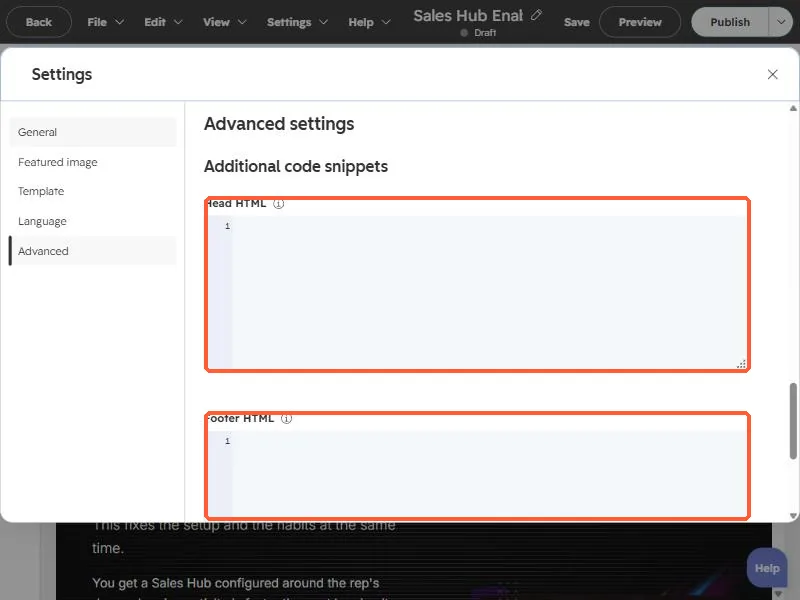

Short answer
Run Lighthouse in Chrome on the published page first. Most gains come from images (compress, set width and height, lazy load below the fold) and from scripts. In HubSpot, page-level scripts live in Settings, Advanced, Head HTML and Footer HTML. Remove any you no longer use, then measure again.
1. Measure before you change anything
Open the published page in Chrome, right-click, choose Inspect, and run the Lighthouse tab. HubSpot's developer blog points to six metrics to watch: First Contentful Paint, Speed Index, Largest Contentful Paint, Time to Interactive, Total Blocking Time, and Cumulative Layout Shift. Write them down. Test the live URL, not the editor. HubSpot's own Analyze tab reports views and bounce rate, not load time, so it will not tell you why a page is slow.
2. Images and video first
HubSpot's developer guidance calls images and video the heaviest assets on a page. Compress them before upload, use HubSpot's image resizing so the browser receives a file at the size it displays, lazy load images below the header, and set explicit width and height on every image so the layout does not jump while it loads.
3. Check the page-level code
Open the page in the editor, then Settings, then Advanced. Head HTML and Footer HTML hold code that loads on this page only. Old tracking pixels, chat widgets and test scripts tend to pile up here. This page's boxes are empty, which is the goal.


- Remove snippets for tools you no longer use, one at a time, and re-test.
- Prefer one tag manager over many pasted scripts if your team already uses one.
- Keep a note of what each snippet is for before deleting it, so you can restore it.
4. Measure again
Re-run Lighthouse on the live page after each change. Run it a few times, since scores vary between runs. If a change did not move the number, put it back.